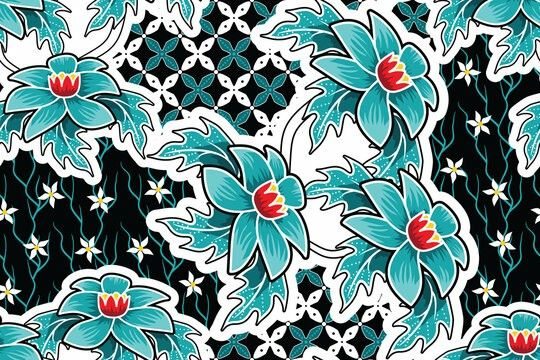
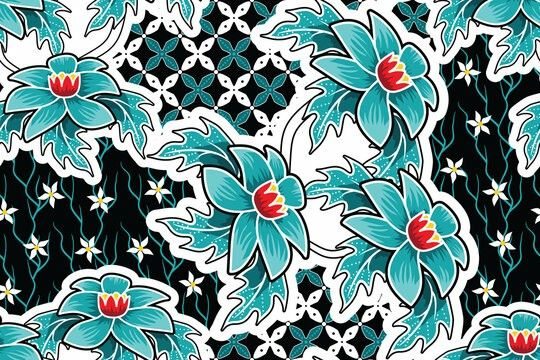
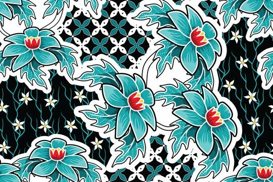

Warisan Budaya Nusantara
Keindahan Batik Indonesia Yang Mendunia.

Keindahan Batik Indonesia Yang Mendunia.
Batik Indonesia adalah warisan budaya dunia yang telah diakui UNESCO sejak tahun 2009. Setiap corak, warna, dan motif batik memiliki makna filosofis yang dalam, mencerminkan nilai kehidupan, alam, serta perjalanan sejarah bangsa. Batik bukan hanya sekadar kain, tetapi juga media ekspresi seni yang menggambarkan identitas dan jati diri masyarakat Indonesia. Hingga kini, batik dipakai dalam berbagai acara, baik resmi maupun sehari-hari, sebagai wujud kebanggaan budaya.
Sejarah batik telah ada sejak masa kerajaan-kerajaan Jawa kuno. Pada awalnya, batik berkembang di lingkungan keraton sebagai simbol status sosial dan spiritual, dengan motif tertentu yang hanya boleh dikenakan oleh bangsawan. Teknik pewarnaan kain menggunakan malam (lilin) kemudian menyebar ke berbagai daerah di Indonesia.
Setiap daerah melahirkan ciri khasnya sendiri:
-Yogyakarta & Solo dengan batik warna sogan yang anggun dan motif parang.
-Cirebon dengan motif Megamendung yang ikonik.
-Lasem dengan warna merah menyala khas “Merah Lasem”.
-Pekalongan dengan batik pesisir yang cerah dan dinamis.
Perjalanan batik dari keraton hingga ke masyarakat luas menunjukkan bagaimana budaya ini mampu beradaptasi dengan zaman, sekaligus tetap mempertahankan nilai tradisi yang mendalam.